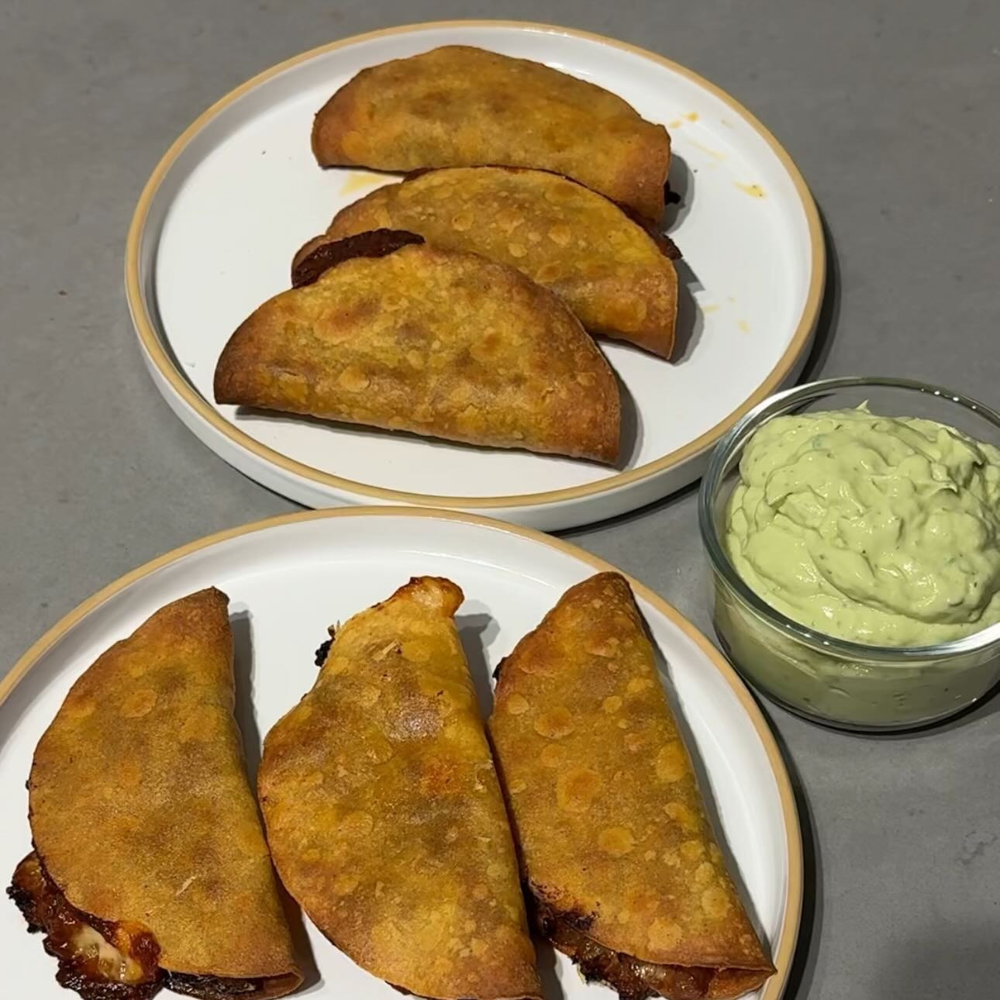

Taquitos Dorados
Ingredientes:
- Aceite de oliva
- ½ cebolla picada
- 1 paquete Carne Molida
- 3 cdas pasta Tomate
- 2 cditas Ajo Picado
- Paprika
- Sal
- 6 Tortillas Maíz
- 1 aguacate
- 1 lima
- ½ tza yogur griego
- Cilantro
Instrucciones:
- Precalienta el horno a 220°C.
- Agrega aceite de oliva y 1/2 cebolla picada a una sartén a fuego medio y cocina hasta que esté
fragante.
- Añade 1 paquete de carne molida de pasto y desmenúzala. Luego agrega 3 cucharadas de pasta de
tomate, 1 cucharadita de ajo picado, paprika y sal, y cocina bien.
- Coloca 6 tortillas de maíz en una bandeja con papel pergamino y cúbrelas por ambos lados con spray
de aceite de oliva. Luego ponlas en el horno durante 3 minutos.
- Saca las tortillas y agrega una capa de queso, una capa de carne molida, y otra capa de queso.
Dóblalas y hornéalas durante 10 minutos.
- Prepara tu salsa de aguacate mezclando: 1 aguacate, el jugo de 1 lima, 1/2 taza de yogur griego, 1
cucharadita de ajo picado, 3 cucharadas de agua, sal y un manojo de cilantro lavado.
- Saca las tortillas, voltéalas y hornéalas durante otros 8-10 minutos.